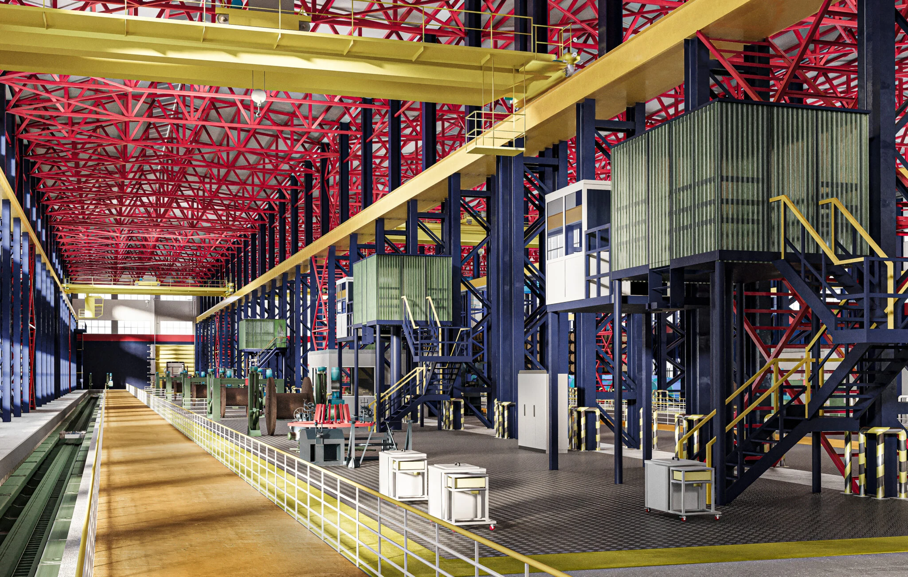

Проекты и партнёры
Реализуем сложные объекты — от проектных решений до результата.
Проектирование, строительство и модернизация. Решения для реальных задач.
01 / 06
Северсталь
Инженерные решения для производства
- Тип объекта
- Промышленный объект
- Направление
- Промышленное производство
- Статус
- Реализован
Комплексная работа с промышленной инфраструктурой и инженерными системами действующего объекта.
Смотреть проект
 Исходное состояниеПроектное решение
Исходное состояниеПроектное решениеПеретащите линию, чтобы сравнить
Другие проекты
5 проектов


Предварительный разбор
Доведём ваш объектот проекта до ввода
Организуем работу проектировщиков и подрядчиков, следим за сроками, качеством и документами. Вы в любой момент понимаете, что происходит на объекте и что нужно для следующего этапа.